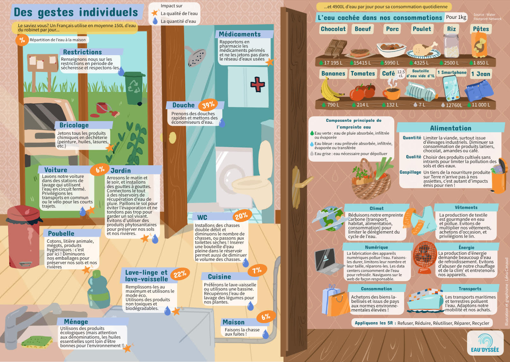
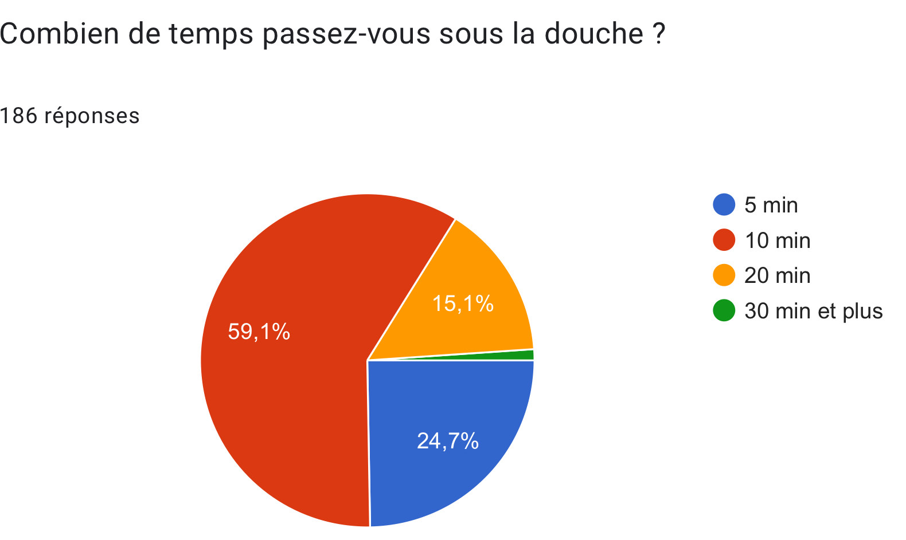
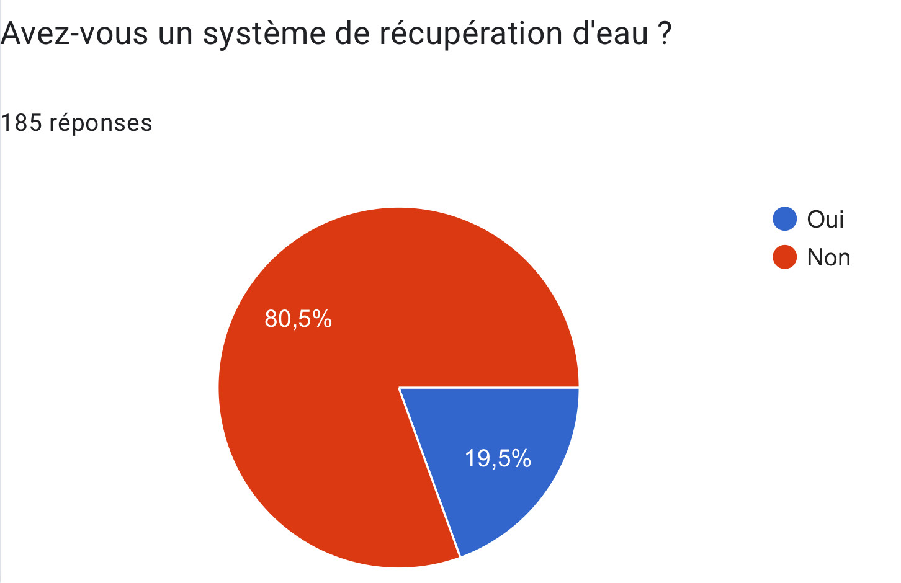
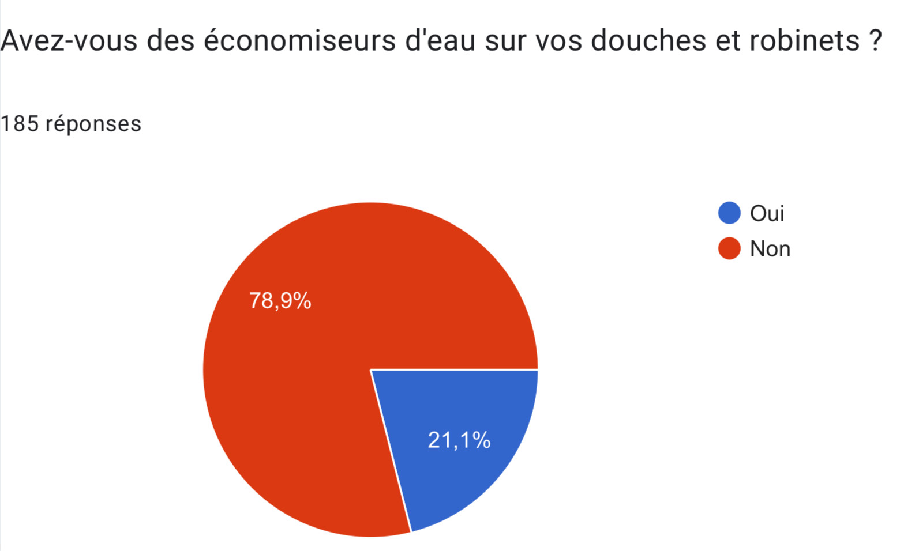
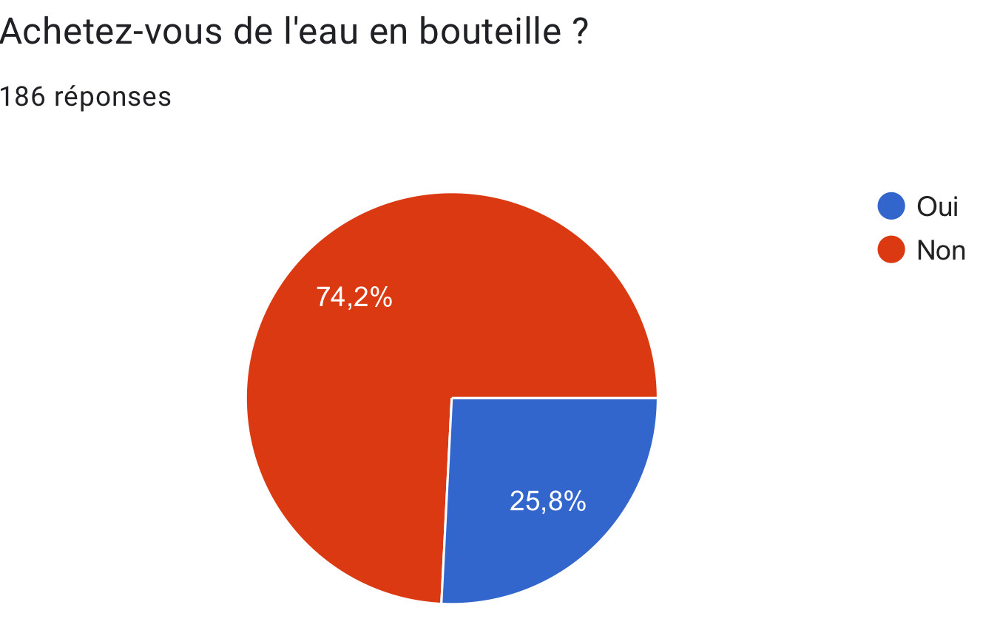

Plusieurs gestes individuels peuvent être effectués au quotidient pour avoir une consommation plus durable de l'eau
Quelques sites complémentaires pour approfondir le sujet
Gestion de l'eau dans le mondeNous avons interrogé des personnes entre 15 et 60 ans, avec majoritairement des étudiants entre 19 et 25 ans
   